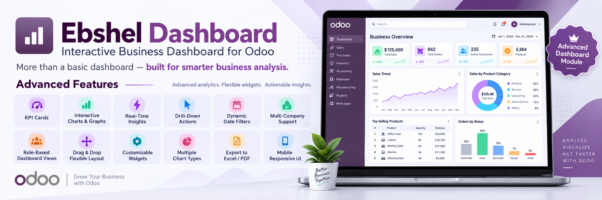
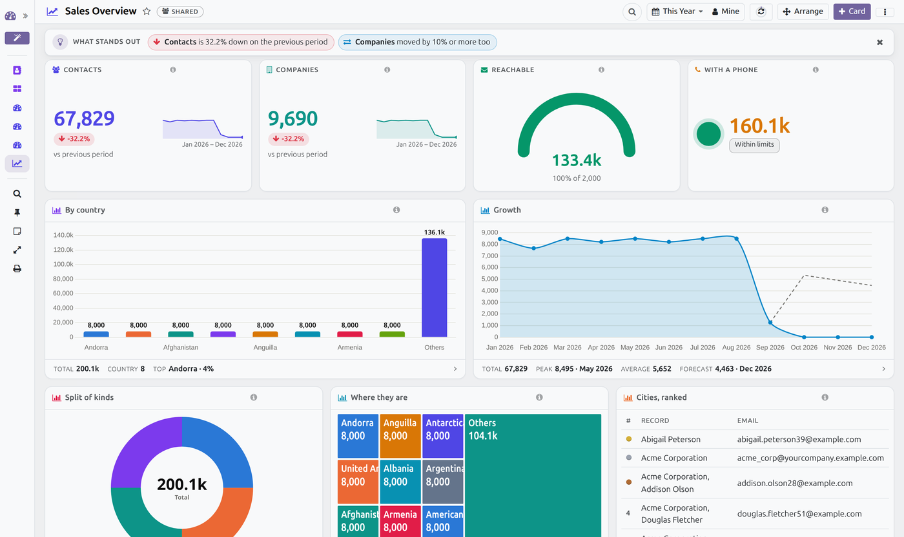
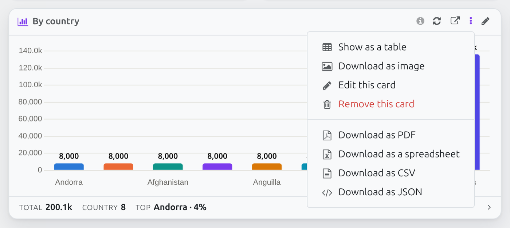
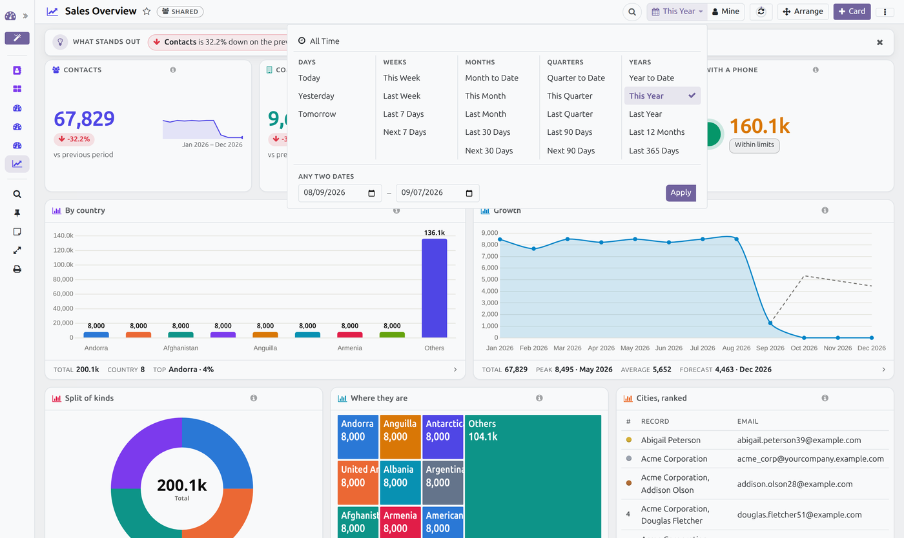
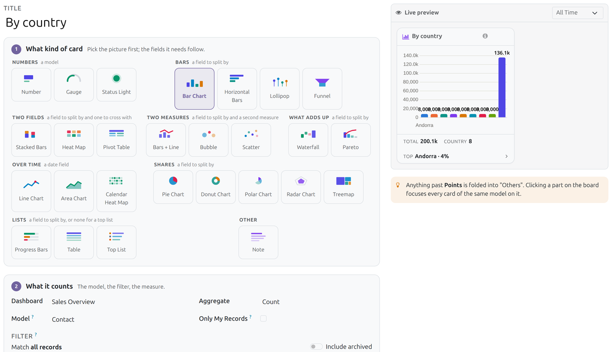
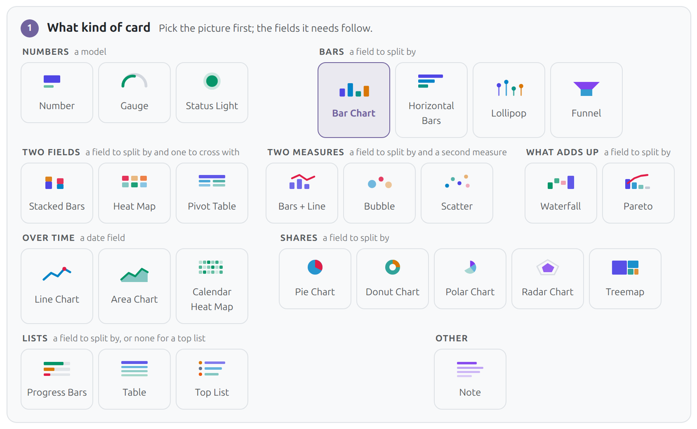
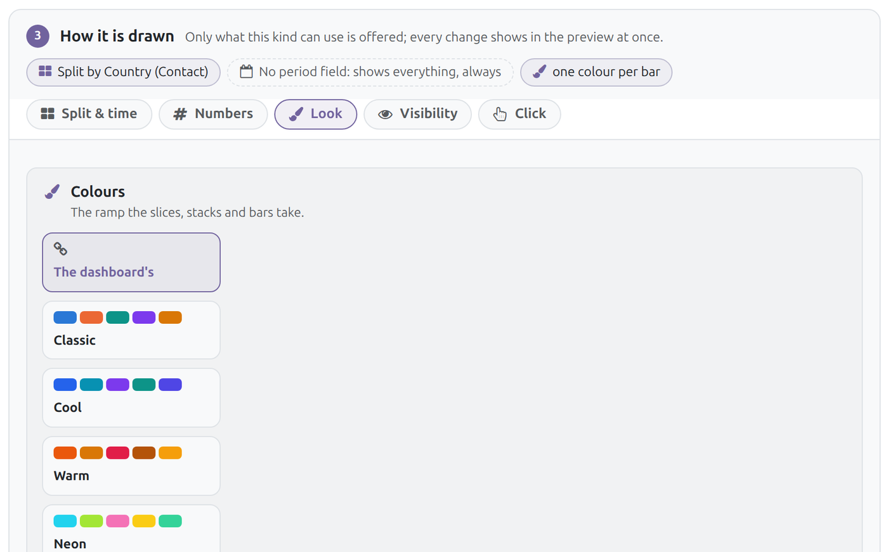
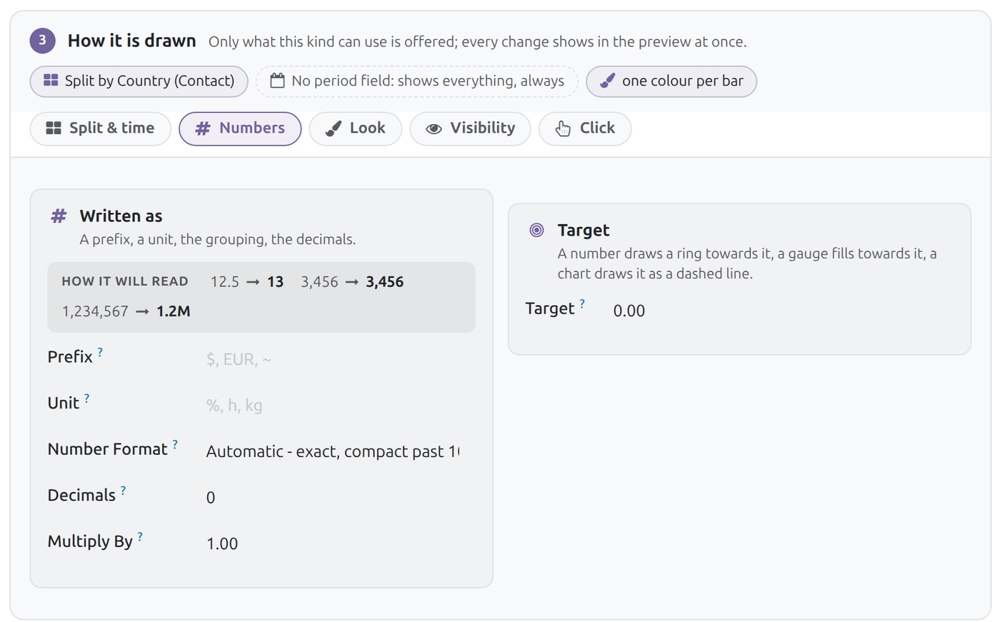

Build a dashboard on any model, from the interface. Twenty-nine kinds of card, a live preview while you build, a workspace with a sidebar, watchlist and notes — and every number clicks down to the records behind it, or narrows the whole board.

One dashboard: numbers with their movement, charts, a treemap and a ranked list — the sidebar on the left, the period, "Mine" and the tools on the right.
How much did we sell this month. How many are still open. Who is behind. What is it split by. Today, answering those means a developer and a deployment — or a spreadsheet that is stale the moment it is sent.
This module turns those questions into cards on a page you build yourself, in the interface, on any model in the database. Or lets the module build the first page for you, from the model's own fields.
Each one is a filter, a measure and a way of drawing it. Every chart can also be shown as a table in place, and downloaded as an image, CSV, JSON, a PDF or a spreadsheet.
Count, sum, average, max or min. Target ring, half dial or bullet bar; comparison with the previous period or last year; sparkline; ratio of the whole; goal pacing against the calendar.
The questions that follow the headline — how many are late, how many are mine — each with its share of the big number and its own records one click away.
Split by any field; stack by a second one, upright or on its side, as amounts or as shares. Values on the bars, a target line, sorted the way you want.
Along a date field, by day to year, as is, cumulative, smoothed or stepped — with a dashed forecast to the end of the period.
Shares of the whole, full or half circle, or a few categories around a wheel. Six colour palettes per board.
Stages narrowing from the widest; a bridge from what added up to what took away; the vital few with their running share drawn over them.
Two fields crossed as a colour matrix or a table with totals; or the shares as nested rectangles, the biggest filling the most room.
One cell per day laid out by week, darker where more happened — a year at a glance, and a click on a day opens it.
Two measures at once: one point per record, or a group placed by both and sized by how many, or bars with a line over them on its own axis.
Value, count and share per group with totals; or the records themselves, ranked, with bars in the cells, medals on the first three and a colour rule for the rows that matter.
The words a board needs: a title, an explanation, a reminder. No model required.
A number turns amber or red when it crosses, tells the board's audience once, and can POST to Slack, Teams or any address the moment it does.
Click a bar, a slice, a point or a row and the whole board narrows to it: every card on the same model follows, a chip says what the focus is, and one more click opens those records.
Click a number and the records it counted open — as a list, a kanban, a graph, a pivot or a calendar, your choice per card.
"Only My Records" makes one card answer differently for each person; the reader's own Only mine switch does it for the whole board.
Saved views keep a period, a focus and that switch under a name — "Belgium, this quarter, mine" is one click next time.

Every card carries its own menu: show it as a table in place, download it as an image, a PDF, a spreadsheet, CSV or JSON — or edit and remove it.
The board page carries the tools a reader reaches for every day.
Under the header, a row of chips written from the numbers on the page: the biggest mover, thresholds crossed, a number out of line with its own past, a goal running behind. Each one jumps to the card it names.
Several pages under one dashboard, and the questions a board asks every time it opens — a company, a salesperson, a stage — as dropdowns whose values come from the data itself.
The layout arrives in one quick call and the numbers fill in a few cards at a time, the page you are looking at first. On a table of 200,000 records the grid is on screen in about ten milliseconds of server time.
Pin any number card and it follows you to every dashboard. Keep a private note per board, saved as you type.
Press Q and it is a command palette: dashboards, cards and actions by name. R refreshes, F presents, E arranges, M is only mine, P prints, Esc clears.
Twenty-three periods grouped by the unit they span — days, weeks, months, quarters, years — with a custom range at the bottom of the same panel.

The period panel: "All time" on top, twenty-two periods in five columns, and any two dates at the bottom.
Nothing here is code, and nothing needs a deployment.
Pick Sales Orders, Tasks, Tickets, Contacts — the module reads the model's fields (its status, its business date, its amount, the user it is assigned to) and builds a sensible first board. Every card can be changed afterwards.
Numbered steps, the real card with the real number pinned beside them as you type, kinds grouped into families that say what they need, a plain-words summary of what the card computes, and visual pickers for width, colour and icon.
Drag cards into place, drag their corner to resize them, duplicate them, move them to another dashboard, on a six, eight or twelve column grid. Saved for everybody who sees the board.
Twenty-three periods or a period of its own; how the numbers are written — plain, short, or the Indian lakh-and-crore grouping; a multiplier, a prefix and a unit; a background; a "hide when" rule; the groups and the companies it is visible to; the view it opens in. A board gets a palette, a density, a slideshow time, tabs, and a menu of its own — under Dashboards, under any existing menu, or as an app on the top bar.

The card editor: what kind, what it counts, how it is drawn, how it looks — and the real card, on real records, pinned beside them.

Kinds are grouped into families that say what they need, and each is drawn in its own shape and colours rather than named.

A line of chips says what is already set; every option is a tile that explains itself.

How the number will read, in the card's own formatter, as you type.
| Presentation mode | Full screen, the board fitted to the screen, a slideshow from one dashboard to the next, auto-refresh from 15 seconds. A print view for paper. |
| Thresholds | A number turns amber or red when it crosses a limit, and can push a notification to the board's audience the moment it happens — once, on the crossing, not every hour it stays crossed. |
| History | Every number card is recorded once a day, so a sparkline can draw the real history, a card can say how it moved since the last point, and a value two standard deviations from its own last thirty days wears an "unusual" badge that shows its working. |
| Export | Any card as an image, CSV, JSON, a PDF or a spreadsheet — the PDF carries the charts you are looking at, the .xlsx a sheet per card with the numbers behind them. Any board travels as a file another database imports, reporting the cards it could not bring rather than dropping them. And a board can post itself by e-mail, daily, weekly or monthly, computed for each recipient with their own rights. |
| Rights | Building is a role: Dashboards / Manager makes, changes and deletes dashboards and cards — enforced in the models, not merely in the interface. Everybody else reads, and keeps their own notes, favourites and saved views. A personal board stays its owner's alone; a board or a single card can name the companies it belongs to. Every number is computed with the reader's own rights. |
The whole feature list, in one place.
| The kinds | Number, gauge, status light, bullet, formula. Bar, sideways bar, lollipop, stacked (upright, sideways, or as shares), bars with a line over them, waterfall, pareto, funnel. Line, area, calendar heat map. Pie, donut, polar, radar, treemap. Heat map, pivot, table, top list. Bubble, scatter. And a note, which needs no model at all. |
| What a card counts | Any model in the database, any filter (built with Odoo's own domain editor, with shorthands for the current user, the active companies, today and now), count, sum, average, maximum or minimum of any stored numeric field, and a second measure where the kind uses one. |
| Formula cards | Name each number by a letter — each its own aggregate over its own filter — and combine them: a / b * 100 is a rate, a - b a difference. abs, min, max, round, sqrt, floor and ceil are available; division by zero gives zero. |
| Sub-values | Small numbers under a headline: the card's own filter plus one more condition, each with the share of the big number it makes up, its own colour, and the records it counted one click away. |
| Split and time | Split by any field, stack by a second, group dates by day, week, month, quarter or year, keep the top N and fold the rest into "Others", sort by value or label, and read the card over the board's period or one of its own. |
| Comparison and history | Against the previous period or the same period last year; a sparkline from the records or from the values recorded daily for that card; running total or smoothing; a dashed forecast to the end of an unfinished period; goal pacing that says whether the calendar is ahead of the number. |
| Anomalies | A number two standard deviations from its own last thirty days wears an "unusual" badge that shows its working. |
| Read back to you | The editor says in plain words what the card computes, and a line of chips says what is set — "Split by Country, every month", "Above 10: danger" — each opening the tab that holds it. |
| Colours | Eleven card colours, six chart palettes taken from the dashboard or chosen per card, one colour per bar, and a plain, tinted or solid background. |
| Chart options | Values on the chart, legend in any corner or hidden, bar ends rounded, square or pill, grid lines on or off, axis titles, a logarithmic axis, an axis that follows the data instead of starting at zero, steps instead of slopes, half circles, a second axis, the total in the middle of a donut, and one bar or point made to stand out. |
| Numbers | A prefix and a unit, decimals, a multiplier, and how figures are written: plain, short (1.2M), or the Indian lakh-and-crore grouping — with three sample values showing the result as you type. |
| Rows | A bar behind each number in a list or a table, medals on the first three, extra columns, and a colour rule that paints a row when one of its fields crosses a line. |
| Face and place | A searchable icon picker (search by meaning: late, revenue, team), a width picker on the twelve-column grid, a height in pixels, a tab, a sequence, and a hint shown on hover. |
| The shell | A sidebar listing every dashboard the reader may open, with favourites, personal markers and a filter box; a header with the title, its tag, the period, "Mine", a refresh that says how old the numbers are and counts down to the next automatic one. |
| Rename and re-icon | Click the dashboard's name to rename it and its icon to change it, on the page that shows them; a menu entry follows the new name. |
| What stands out | A row of chips written from the numbers on the page: the biggest mover, thresholds crossed, a value out of line with its own past, a goal running behind. |
| Tabs and filters | Several pages under one dashboard, and the questions a board asks every time it opens — a company, a salesperson, a stage — as dropdowns whose values come from the data. |
| Focus | Click a bar, a slice, a point, a cell or a row and every card on the same model narrows to it; a chip says what the focus is and opens those records. |
| Tools | Tile search, quick find (Q) as a command palette, a watchlist that follows you between dashboards, a private note per board, saved views that keep a period, a focus and the "Mine" switch under a name, and hotkeys for refresh, present, arrange, mine and print. |
| Arrange | Drag cards into place, drag a corner to resize, duplicate, move to a tab or to another dashboard, tidy the layout, or discard the whole arrangement and put everything back. |
| Speed | The layout arrives in one call and the numbers follow a few cards at a time, the tab you are looking at first; cards that ask the same question of the same model share one answer. On 200,000 records the grid is on screen in about ten milliseconds of server time. |
| A whole dashboard or a single card, landscape A4, the charts exactly as they are on screen and every figure recomputed with the reader's own rights. Composed with reportlab: no wkhtmltopdf. | |
| Spreadsheet | An .xlsx with a sheet per card — the numbers behind the picture, the period and the filters written at the top of each. |
| Per card | As an image, as CSV, as JSON, or shown as a table in place. |
| E-mail digests | A dashboard posts itself daily, weekly or on a day of the month, at an hour you pick, to users and to plain addresses: the headline numbers with their movement, the whole board attached as a PDF, and each user's copy computed with their own rights. |
| Webhooks | A card that crosses its threshold can POST itself — the card, the value, the message — to Slack, Teams or any address, with a "send a test" button beside the field. |
| Portability | Any board travels as a JSON file another database imports; cards whose model is not installed there are reported, not silently dropped. |
| On the wall | Presentation mode fits the board to the screen, moves from one dashboard to the next on a timer, and refreshes itself from every 15 seconds. A print view for paper. |
| The role | Dashboards / Manager makes, changes and deletes dashboards and cards — enforced in the models, not merely hidden in the interface. Everybody else reads, and keeps their own favourites, notes, watchlist and saved views. |
| Who sees what | A personal board stays its owner's; a shared board can be restricted to groups; a board or a single card can name the companies it belongs to, and empty means every company. Every number is computed with the reader's own rights, so one dashboard tells each person the truth. |
| Menus | Give a dashboard a menu of its own: under Dashboards, under any existing menu of any app, or as an app of its own on the top bar — named, placed and restricted from the board itself. |
| Multi-language | Titles, notes, hints and threshold messages are translatable fields. |
Odoo 19.0, Community or Enterprise.
Depends on web and bus only. No Enterprise-only module, no external Python package, no external JavaScript library.
Charts use the Chart.js build that already ships inside Odoo, loaded only when a board is opened.
Questions, or a card you cannot build? Write to us.
ebinpg777@gmail.com